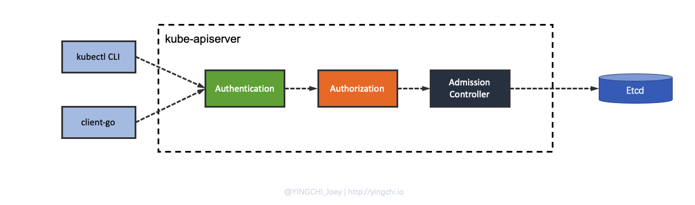
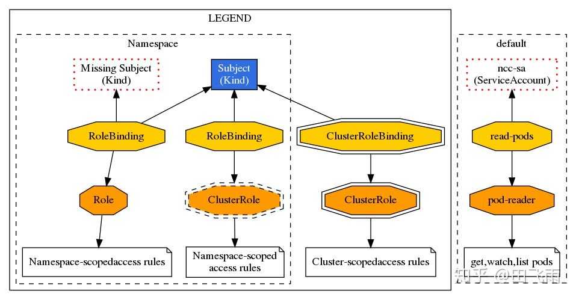
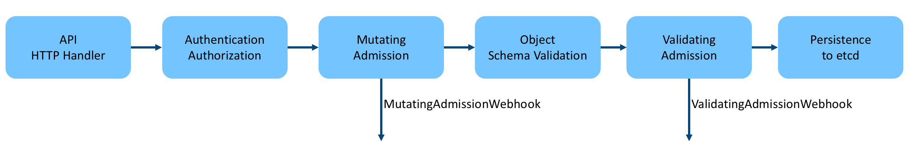

Kubernetes API Server 认证与授权机制
kube-apiserver 是 kubernetes 的网关性质的组件，是 kubernetes 集群资源操作的唯一入口，因此像认证与授权等一些过程很明显是要基于这个组件实施。kubernetes 集群的所有操作基本上都是通过 apiserver 这个组件进行的，它提供 HTTP RESTful 形式的 API 供集群内外客户端调用。kubernetes 对于访问 API 来说提供了三个步骤的安全措施：认证、授权、准入控制，当用户使用 kubectl，client-go 或者 REST API 请求 apiserver 时，都要经过这三个步骤的校验。

- 认证解决的问题是识别用户的身份；
- 授权是明确用户具有哪些权限；
- 准入控制是作用于 kubernetes 中的资源对象。
Kubernetes API Server 认证机制（Authentication）
一旦TLS连接建立，请求就进入到身份认证阶段，在这一阶段，请求有效负载由一个或多个认证器模块检查。
认证模块时管理员在集群创建过程中配置的，一个集群可能有多个认证模块配置，每个模块会依次尝试认证， 直到其中一个认证成功。
在主流的认证模块中会包括客户端证书、密码、plain tokens、bootstrap tokens以及JWT tokens（用于service account）。客户端证书的使用是默认的并且是最常见的方案。
kubernetes 目前所有的认证策略如下所示：
- X509 client certs
- Static Token File
- Bootstrap Tokens
- Static Password File
- Service Account Tokens
- OpenId Connect Tokens
- Webhook Token Authentication
- Authticating Proxy
- Anonymous requests
- User impersonation
- Client-go credential plugins
Kubernetes 常用认证机制
X509 client certs
X509 client certs 认证方式是用在一些客户端访问 apiserver 以及集群组件之间访问时使用，比如 kubectl 请求 apiserver 时。
适用对象：外部用户
X509是一种数字证书的格式标准，现在 HTTPS 依赖的 SSL 证书使用的就是使用的 X509 格式。X509 客户端证书认证方式是 kubernetes 所有认证中使用最多的一种，相对来说也是最安全的一种，kubernetes 的一些部署工具 kubeadm、minkube 等都是基于证书的认证方式。客户端证书认证叫作 TLS 双向认证，也就是服务器客户端互相验证证书的正确性，在都正确的情况下协调通信加密方案。目前最常用的 X509 证书制作工具有 openssl、cfssl 等。
Service Account Tokens
serviceaccounts 是用在 pod 中访问 apiserver 时进行认证的，比如使用自定义 controller 时。
适用对象：内部用户
有些情况下，我们希望在 pod 内部访问 apiserver，获取集群的信息，甚至对集群进行改动。针对这种情况，kubernetes 提供了一种特殊的认证方式：serviceaccounts。
serviceaccounts 是面向 namespace 的，每个 namespace 创建的时候，kubernetes 会自动在这个 namespace 下面创建一个默认的 serviceaccounts；并且这个 serviceaccounts 只能访问该 namespace 的资源。
serviceaccounts 和 pod、service、deployment 一样是 kubernetes 集群中的一种资源，用户也可以创建自己的 serviceaccounts。
serviceaccounts 主要包含了三个内容：namespace、token 和 ca，每个 serviceaccounts 中都对应一个 secrets，namespace、token 和 ca 信息都是保存在 secrets 中且都通过 base64 编码的。namespace 指定了 pod 所在的 namespace，ca 用于验证 apiserver 的证书，token 用作身份验证，它们都通过 mount 的方式保存在 pod 的文件系统中，其三者都是保存在 /var/run/secrets/kubernetes.io/serviceaccount/目录下。
Kubernetes API Server 授权机制（Authorization）
请求经过认证之后，下一步就是确认这一操作是否被允许执行，即授权。
对于授权一个请求，Kubernetes主要关注三个方面：
- 请求者的用户名
- 请求动作
- 动作影响的对象
用户名从嵌入 token 的头部中提取，动作是映射到CRUD操作的HTTP动词之一（如 GET、POST、PUT、DELETE），对象是其中一个有效的 Kubernetes 资源对象。
Kubernetes基于一个存在策略来决定授权。默认情况下，Kubernetes遵循封闭开放的理念，这意味着需要一个明确的允许策略才可以访问资源。
与身份认证类似，授权也是基于一个或多个模块配置的，如ABAC模式、RBAC模式以及Webhook模式。当管理员创建集群时，他们配置与API sever集成的授权模块。如果多个模块都在使用，Kubernetes会检查每个模块并且如果其中任一模块授权了请求，则请求授权通过。如果所有模块全部拒绝请求，则请求被拒绝（HTTP状态码403）。
kubernetes 目前支持如下四种授权机制：
- Node
- ABAC
- RBAC
- Webhook
kubernetes 常用授权机制
RBAC（基于角色的访问控制）
RBAC，Role-Based Access Control，即基于角色的访问控制，通过自定义角色并将角色和特定的 user，group，serviceaccounts 关联起来已达到权限控制的目的。
RBAC 中有三个比较重要的概念：
- Role：角色，它其实是一组规则，定义了一组对 Kubernetes API 对象的操作权限；
- Subject：被作用者，包括 user，group，serviceaccounts，通俗来讲就是认证机制中所识别的用户；
- RoleBinding：定义了“Role”和“Subject”的绑定关系，也就是将用户以及操作权限进行绑定；
RBAC 其实就是通过创建角色(Role），通过 RoleBinding 将被作用者（subject）和角色（Role）进行绑定。下图是 RBAC 中的几种绑定关系：

准入控制(Admission Control)
准入控制是请求的最后一个步骤，准入控制有许多内置的模块，可以作用于对象的 “CREATE”、“UPDATE”、“DELETE”、“CONNECT” 四个阶段。在这一过程中，如果任一准入控制模块拒绝，那么请求立刻被拒绝。一旦请求通过所有的准入控制器后就会写入对象存储中。
服务网格 Istio 技术的 Sidecar 注入过程就是依赖于 Kubernetes 的准入控制实现的。
Admission Controller 是拦截 API Server 请求 (经过身份验证的) 的网关，并且可以修改请求对象或拒绝请求。简而言之，它可以认为是拦截器，类似 web 框架中的 middleware，是 Kubernetes API Server 用于拦截请求的一种手段。
Kubernetes 为什么引入 admission 这种机制？
- 虽然 Kubernetes 有 Authentication & Authorization 这种认证授权机制，Authentication & Authorization 运行在 filter 中，只能获取 http 请求 header 以及证书，并不能获取请求的 body。所以不可以对请求的对象进行任何操作，因为获取不到对象。
- Admission Controller 运行在 API Server 的增删改查 handler 中，可以自然地操作 API resource。
API Server 接收到客户端请求后首先进行认证授权，认证授权通过后才会进行后续的 endpoint handler 处理，kube-apiserver 处理资源请求的流程如下：

可以看到，在 Authentication & Authorization 之后请求就交由 Admission Controller 继续处理，这里涉及到 Admission 两个重要阶段，Mutating和Validating，它们的区别如下：
- Mutating：可以对请求内容进行修改；
- Validating：不允许修改请求内容，但可以根据请求的内容判断是继续执行该请求还是拒绝该请求；